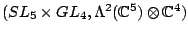

< Japanese/English >
Amano, Katsutoshi
Researchmap page (database of researchers in Japan)
Lectures
Research
Publications
- Hopf algebraic approach to Picard-Vessiot theory (with A. Masuoka and M. Takeuchi), In: M. Hazewinkel (ed.), "Handbook of Algebra", Vol. 6, Elsevier, 2009, pp. 127--171.
- Liouville extensions of artinian simple module algebras, Comm. Algebra 34 (2006), 1811--1823.
- Picard-Vessiot extensions of artinian simple module algebras (with A. Masuoka), J. Algebra 285 (2005), 743--767.
- Construction of irreducible relative invariant of the prehomogeneous vector space  (with M. Fujigami and T. Kogiso), Linear Algebra Appl. 355 (2002), 215--222.
Research note
Thesis
Other articles in Japanese are available in the Japanese version.